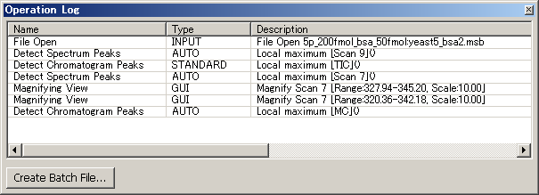

You can confirm the history of operations which have been performed, and undo/redo the operations.
Select [View] in the menu bar and then select [Pane] > [Operation Log] from the drop down menu.
The Operation Log pane appears.

Undoing and Redoing the Operations
You can undo/redo the operations.
Select [Edit] in the menu bar and then select [Undo] from the drop down menu, or use the Ctrl+Z shortcut to undo.
Select [Edit] in the menu bar and then select [Redo] from the drop down menu, or use the Ctrl+Y shortcut to redo.